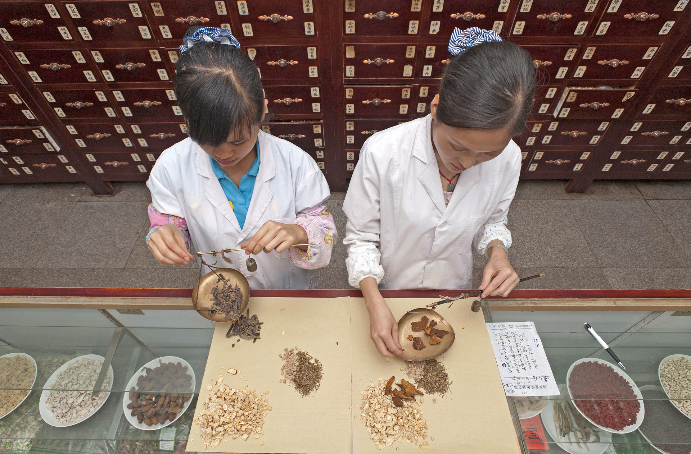

Visión de bienestar

Los Primeros Pasos
Todo comenzó con una idea sencilla pero poderosa: resolver una necesidad que no estaba siendo atendida en el mercado. El camino hacia el éxito no fue fácil, pero el compromiso, la visión y la innovación fueron claves en cada paso del proceso.
Identificación de la necesidad: Un emprendedor apasionado detectó una brecha en el mercado que podía ser aprovechada.
Formulación de la visión: Se estableció un propósito claro: crear productos y servicios que marcaran la diferencia.
Creación del concepto: La idea inicial se convirtió en un modelo de negocio estructurado.
El Lanzamiento
Reunión de recursos:
Capital inicial a través de ahorros personales y socios estratégicos.
Equipo pequeño pero comprometido, con un enfoque en la innovación.
Diseño del producto: Desarrollo de prototipos y pruebas iniciales para garantizar la calidad.
Primeros clientes:
Promoción a través de redes personales.
Construcción de confianza mediante resultados tangibles.